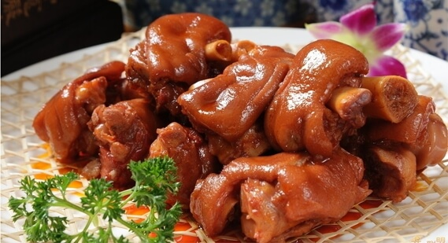
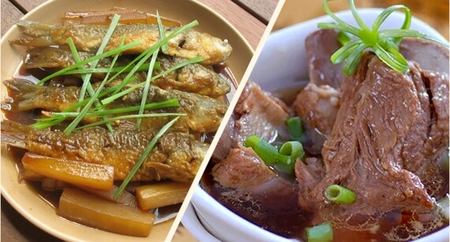
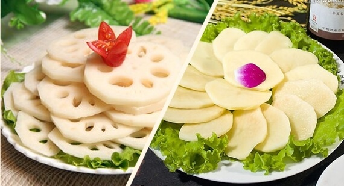
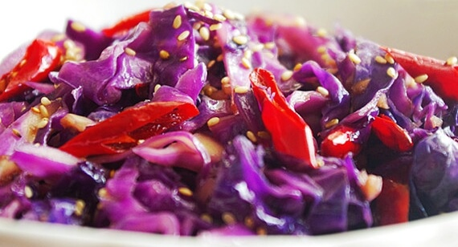
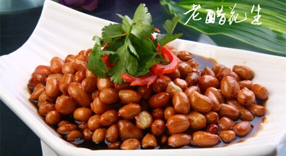
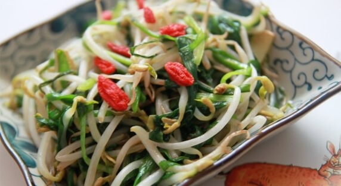

醋是百姓餐桌上常用的调味品，具有开胃消食等功效。哪几样菜加点醋最好呢？下面我们一起来看一下几款缺醋不成的美味菜肴。
若在烧猪蹄时，稍微加些醋一起烹调，可使猪蹄中的蛋白质易于被人体消化、吸收和利用。因为猪蹄中主要含有的胶原蛋白在加酸的热水中易分解出来，并使猪蹄骨细胞中的胶质分解出磷和钙，使营养价值增加。
动物的骨头里含有丰富的钙质，但这些钙主要以化合物的形式存在，煮炖时不易溶出。若在熬小鱼、炖排骨汤的时候加点醋，能促使骨头中的钙溶解出来，利于人体吸收。
切好的藕片或土豆，很快就变成褐色。这是因为在多酚氧化酶的催化下，藕片或土豆中的多酚类物质发生了氧化。而加点醋就能抑制氧化酶的活性，使其不易变色。
紫甘蓝、茄子这类紫红色的菜肴富含花青素，在酸性条件下呈现漂亮的红色，若是条件偏碱性就会发蓝发黑。因此，在炒紫甘蓝等紫红色蔬菜时，放点醋能使菜肴的颜色更加红亮鲜艳。
醋泡花生米如果坚持食用，对健康有益。花生中含有核黄素、钙、磷、卵磷脂、胆碱、不饱和脂肪酸及多种维生素，在中医典籍中被称为“长生果”。醋可以促进新陈代谢，帮助机体休息，消除疲劳，预防动脉硬化和高血压。
豆芽中除含有丰富的维生素C之外，还含有维生素B1、B2及其他营养成分，烹调时易被氧化而遭破坏，放醋可以起到保护这些营养素的作用。另外，醋对豆芽中的蛋白质有明显的凝固作用，能使豆芽增加脆度。因此，炒豆芽宜放些醋。